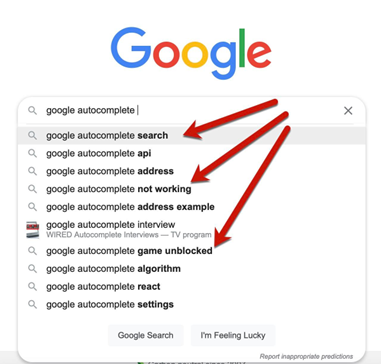
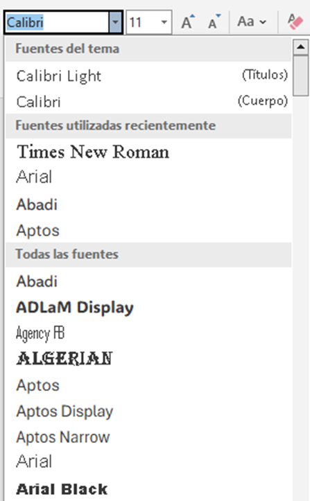
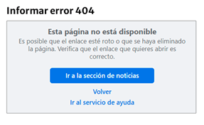
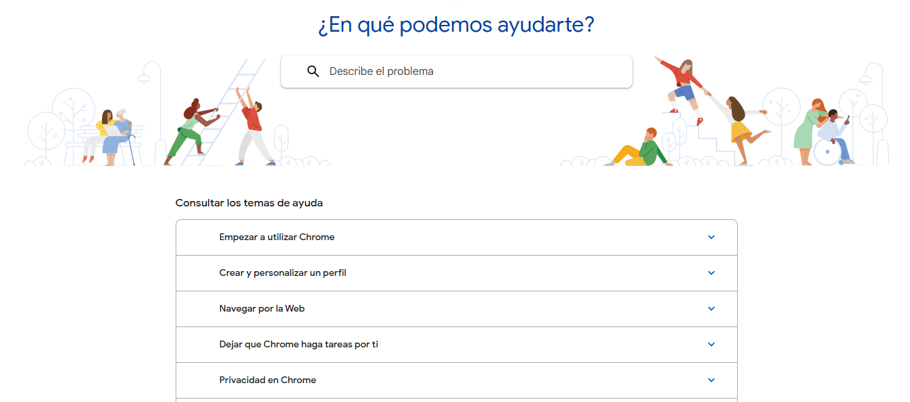

SEO
¿Qué es?
SEO son las siglas en ingles Search Engine Optimization que se traduce como Optimizacion para motores de busqueda, y es una tecnica implementada en paginas para incrementar su visibilidad y el posicionamiento en los resultados de los motores de busqueda.
Importancia
Es importante por la gran cantidad de trafico en la red, y si se quiere llegar a ocupar los primeros
lugares,
usar las tecnicas de SEO es una buena forma, asi se va a poder destacar entre la competencia y
atraer mas visitantes a la pagina web, aumenta la credibilidad
¿Cómo optimizar una página web para SEO?
Para optimizar una pagina web para SEO, se deben seguir varias estrategias:
- Utilización palabras clave.
- Crear contenido de calidad y original.
- Optimizar las meta etiquetas (titulo, descripcion, etc).
- Mejorar la velocidad de carga de la pagina.
- Hacer que la pagina sea responsive (adaptable a dispositivos moviles).
- Utilizar enlaces internos y externos de calidad.
Ademas, es importante realizar un seguimiento y analisis del rendimiento de la pagina para hacer ajustes y
mejoras continuas.
Los motorers de busqueda funcionan con algoritmos complejos. El SEO tiene optimizaciones que se hacen en
el sitio web,
que aumenta la calidad de la pagina y a esto se hace que sea más visitado
Tienen en cuenta varios factores como:
- Palabras clave
- Creacion de contenido
- Optimizacion
¿Qué son las Meta Etiquetas y describir las principales?
Las meta etiquetas son fragmentos de texto que describen el contenido de una pagina web, y se encuentran
en el codigo HTML.
Son importantes porque ayudan a los motores de busqueda a entender de que trata la pagina, y pueden
influir en el posicionamiento.
Las principales son:
- Meta Titulo: Es el titulo de la pagina que aparece en los resultados de busqueda.
- Meta Descripcion: Es un resumen breve del contenido de la pagina.
- Meta Palabras Clave: Son palabras o frases clave relacionadas con el contenido de
la pagina.
¿Cómo se aplica el tema en la página de esta investigación?
Este sitio implementa estructuras limpias, metaetiquetas y contenido relevante para facilitar su posicionamiento en motores de búsqueda.
Referencias
Usabilidad Web
¿Qué es?
La usabilidad web es la facilidad que tiene el usuario para poder interactuar con ella, es decir, que sea intuitiva, que pueda encontrar fácil lo que quiere y que sea agradable
La usabilidad web mide 3 factores muy importantes
- Eficicencia: El usuario logra el objetivo de la busqueda
- Eficacia: Buena usabilidad, logra el propósito rápido
- Satisfacción: El usuario considero que la navegacion fue fácil y agradable
Importancia
Una buena usabilidad es util para mejorar la exeriencia del usuario y asi aumentar la probabilidad de que la persona regrese o recomiende el sitio, y asi la posibilidad de aumntar el numero de visitas
Una buena usabilidad web es util para mantener a los usuarios interesados. . Un sitio web fácil de usar puede aumentar la satisfacción del usuario, reducir la tasa de rebote y mejorar las conversiones
Los principios de usabilidad web de Jakob Nielsen son la base de cualquier página web para que sea “user friendly”
para que asi los usuarios quieren ver la página, porque si el sitio es dificil de entender o lento, el usuario no va a querer quedarse.
Principios de Jakob Nielsen
Visibilidad del estado del sistema: El usuario siempre debe de saber que es lo que esta pasando, por lo que pagina siempre le debe de estar dando alertas de los que pase
Por ejemplo: Barra de progreso que va avanzando mientras carga el contenido 
Relación entre el sistema y el mundo real: Se tiene que hablar el mismo lenguaje que el usuario, se pueden utilizar imagenes o frases que sean fáciles y claras, usando un orden lógico
Por ejemplo: El icono de papelera para eliminar archivos
Control y libertad del usuario: El usuario puede equivocarse, por eso siempre se le debe dar la posibilidad de revertir algo que haya realizado para que no se frustre
Por ejemplo: Eliminar articulos del carrito
Consistencia y estándares: Algunos iconos que para las personas ya es algo normal, los entienden y saben utilizar, por lo que si se cambian, puede empeorar la usabilidad ya que el usuario puede que no entienda con otros iconos
Por ejemplo: tres lineas horizontales que representan un menu desplegable
Prevención de errores: Hay que prevenir cualquier error que el usuario podria cometer, hay que indicarle para que vea su error antes de que lo haga y si igual cae hay que buscar la forma de reconducirle de manera facil y rápida
Por ejemplo: Funcion de autocompletar de Google
Reconocer antes que recordar: Es mejor que el usuario reconozca a que tenga que memorizar acciones para realizar algo
Por ejemplo: Previsualizar las tipografias
Flexibilidad y eficiencia de uso: EL sitio web debe de estar preparado para cualquier tipo de usuario, ya sea experto o novato
Por ejemplo: Buscadores de google
Diseño estético y minimalista: Debemos evitar elementos, información innecesaria al usuario, ya que esto distrae al usuario y hace que la pagina no cargue rapido
Por ejemplo: Hay que intentar que todos los errores que pueden aparecer en la pagina sean entendible, por ejemplo cuando sale error 404
Ayudar a los usuarios a reconocer, diagnosticar y corregir los errores
Por ejemplo: cuando sale error 404, cambiarlo por un mensaje que se entienda mas
Ayuda y documentación: En algunas ocasiones los usuarios podrían llegar a ocupar un manual para lograr su objetivo
Por ejemplo: La sección de preguntas frecuentes
Referencias
Accesibilidad Web
¿Qué es?
La accesibilidad web es la práctica de diseñar y desarrollar paginas web que puedan ser usadas por todas las personas, incluidas aquellas con discapacidades como visuales, auditivas, motoras o cognitivas, agregando herramientas para que puedan navegar por todo el contenido.
Importancia
La accesibilidad web es importante para crear un internet sin barreras para que asi las personas puedan acceder a la información que ocupan, sin importar sus habilidades o limitaciones, y esto mejora la experiencia del usuario
Principios fundamentales de la accesibilidad web según las WCAG
- Perceptible: Todos los usuarios deben de poder distinguir el contenido de la pagina, incluidos los que utilizan tecnológias de asistencia.
Ejemplo: Texto alternativo para imágenes


- Operable: Los componentes de la pagina como botones, llenar formularios tiene que ser accesibles para el usuario.
Navegacion por teclado
Presiona Tab para navegar entre botones y Enter para activarlos
- Comprensible: La información y el funcionamiento debe ser fácil, legible y que ayude a no cometer errores.
Ejemplo: Formulario con etiquetas claras
Formulario con etiquetas asociadas a cada campo e instrucciones claras
- Robusto: El sitio web debe de ser compatible con tecnologias actuales y futuras, navegadores y tecnologias de asistencia
Uso de elementos semánticos
<header>
<h1>Título de la página</h1>
</header>
<nav>
<ul>
<li><a href="#">Inicio</a></li>
</ul>
</nav>
<main>
<article>
<h2>Título del artículo</h2>
</article>
</main>
<footer>
<p>Derechos reservados</p>
</footer>
Referencias